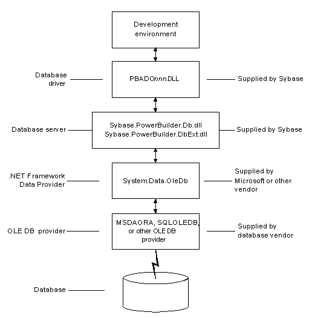
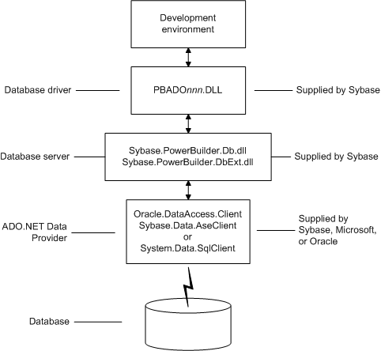

You can use the PowerBuilder ADO.NET database interface to connect to a data source such as Adaptive Server® Enterprise, Oracle, and Microsoft SQL Server, as well as to data sources exposed through OLE DB and XML, in much the same way as you use the PowerBuilder ODBC and OLE DB database interfaces.
 Performance You might experience better performance if you use a native
database interface. The primary purpose of the ADO.NET interface
is to support shared connections with other database constructs
such as the .NET DataGrid in Sybase DataWindow .NET.
Performance You might experience better performance if you use a native
database interface. The primary purpose of the ADO.NET interface
is to support shared connections with other database constructs
such as the .NET DataGrid in Sybase DataWindow .NET.
When you access a database using ADO.NET in PowerBuilder, your connection goes through several layers before reaching the database. It is important to understand that each layer represents a separate component of the connection, and that components might come from different vendors.
The PowerBuilder ADO.NET interface consists of a driver (pbado105.dll) and a server (either Sybase.PowerBuilder.Db.dll or Sybase.PowerBuilder.DbExt.dll). Both the driver and server DLLs must be deployed with an application that connects to a database using ADO.NET. For Oracle 10g or Adaptive Server 15 or later, use Sybase.PowerBuilder.DbExt.dll. For earlier versions and other DBMSs, use Sybase.PowerBuilder.Db.dll.
The PowerBuilder database interface for ADO.NET supports the ADO.NET data providers listed in Table 5-1.
Additional .NET Framework data providers may be supported in future releases. Please see the release bulletin for the latest information.
Figure 5-1 shows the general components of an ADO.NET connection using the OLE DB .NET Framework data provider.

Figure 5-2 shows the general components of an ADO.NET connection using a native ADO.NET data provider.

When you use the .NET Framework data provider for OLE DB, you connect to a database through an OLE DB data provider, such as Microsoft's SQLOLEDB or MSDAORA or a data provider from another vendor.
The .NET Framework Data Provider for OLE DB does not work with the MSDASQL provider for ODBC, and it does not support OLE DB version 2.5 interfaces.
You can use any OLE DB data provider that supports the OLE DB interfaces listed in Table 5-2 with the OLE DB .NET Framework data provider. For more information about supported providers, see the topic on .NET Framework data providers in the Microsoft .NET Framework Developer's Guide .
The PowerBuilder ADO.NET interface supports connection to Adaptive Server Anywhere, Adaptive Server Enterprise, Microsoft SQL Server, Oracle, Informix, and Microsoft Access with the OLE DB .NET Framework data provider.
After you install the data provider, you might need to define a data source for it. To define a data source for one of the OLE DB data providers shipped with PowerBuilder, use the DataDirect OLE DB Administrator. This utility is named PBadmin and can be found in Sybase\Shared\DataDirect.